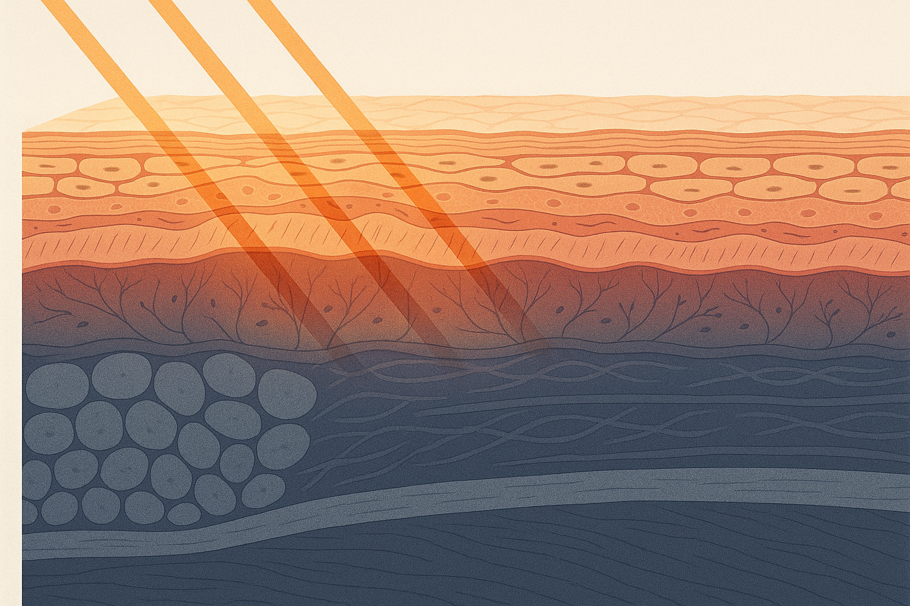
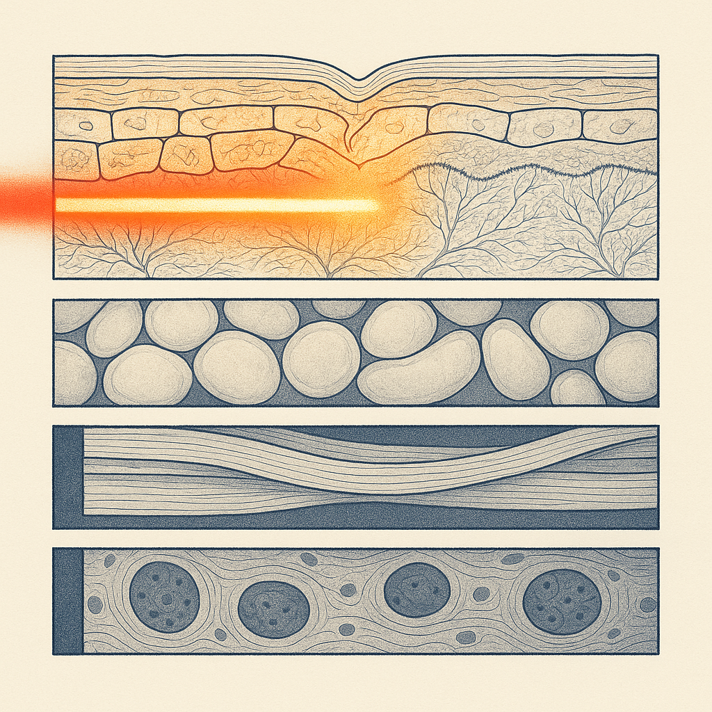
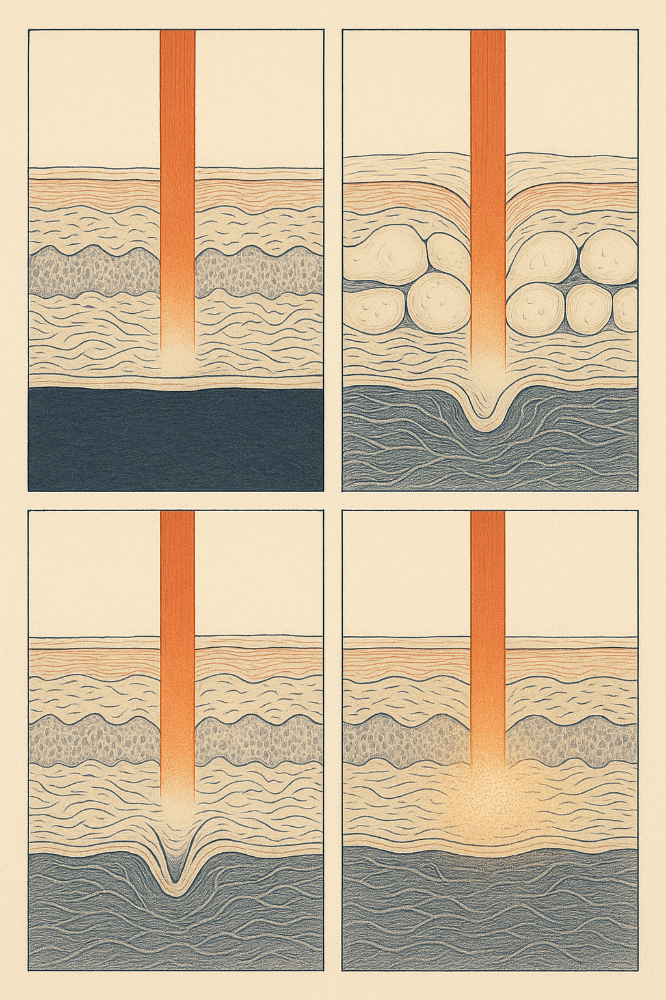

Review below. Reply approve to publish the Facebook post, or tell me edits.

We sell a light mask. And for several of the things people buy a light mask for, it does nothing at all.
That is an odd sentence for a brand to write. It is also the most useful thing we can tell you, because the single biggest cause of disappointment with at-home LED is not a bad device. It is a good device pointed at the wrong problem.
So here is the promise for the next few minutes. By the end you will know whether the thing bothering you in the mirror is a light problem, a structural problem, a pigment problem or a barrier and habit problem. And you will know what actually addresses each one, including the answers that have nothing to do with us.
Three of those four boxes are not our department. Read on for why.
The proper name is photobiomodulation. Stripped of the jargon: certain visible wavelengths are absorbed by structures inside skin cells, and that absorption is associated with a gentle shift in cell activity, including in the fibroblasts that make collagen and elastin. Red sits around 630 nm. Blue sits around 460 nm and is the one associated with breakout-prone skin.
Two things follow. Light works at the level of cell behaviour in the upper layers, and it works cumulatively. It is closer to flossing or sunscreen than to a facelift. Hold that in your head while we go through the four cases.
Not in the way people hope. Sagging is not a surface event. A face changes shape because bone resorbs around the orbit and jaw, because the fat pads that once sat high in the cheek descend, and because the ligaments holding all of it in place loosen. That is architecture.
Light does not lift architecture: it cannot rebuild bone, reposition a fat pad or shorten a ligament. If what you see is a jawline softening or a cheek dropping, that is the territory of injectables, energy based devices delivered by a practitioner, or surgery. No amount of consistency with a mask changes the category of the problem. Anyone telling you otherwise is selling you the wrong thing.
No, and the distinction matters. A fine line shows up when skin is dry, dull or thinning, and it comes and goes with hydration and light. A static line is visible when your face is completely at rest, and it is a genuine fold in the dermis, reinforced by thousands of repetitions of the same muscle movement.
Cosmetic light can support the appearance of fine surface lines over weeks. It does not erase an etched crease between the brows or a deep nasolabial fold. If that specific line is the reason you are shopping, a mask will not satisfy you, and we would rather you knew that now than in eight weeks.
We would not experiment on melasma with a home device, and we do not think you should either.
Melasma is unusually reactive, to visible light and to heat, which is exactly what makes it different from ordinary sun freckling. It needs a proper plan from a dermatologist, and it needs daily SPF as the non negotiable base layer, because without that every other step is uphill. Stubborn pigment in general rewards a diagnosis before a purchase. Buying a light device and hoping is not a plan.
This is the honest one. Photobiomodulation is cumulative, which is a polite way of saying it only works if it becomes boring.
Ten minutes, most days, for a couple of months. If you know yourself, and you know that means twice in a month, then the mask is an ornament on a shelf. Put the money into a sunscreen you will genuinely reach for every morning. Sun exposure is the single largest driver of how skin ages, so on a pure return basis SPF outranks every device in this category, ours included.
Honest timelines, the same ones we give everywhere: a glow and better looking tone at roughly 7 to 10 days, softened appearance of fine lines somewhere in the 4 to 8 week range. Nothing dramatic in the first fortnight. That is normal, not a fault.
So who does it suit? Someone with early fine lines rather than set creases. Someone whose complaint is dullness and tone that looks uneven rather than a diagnosed pigment condition. Someone with breakout-prone skin. Someone who has diligently treated their face for a decade and skipped their neck entirely. And, most of all, someone who wants one low effort maintenance step that survives a busy week.
Seven LED colours. 70 chips on the face piece and 33 on the neck band, 309 emission points in total. A 5V 1200 mAh internal battery, USB-C charging, 4 to 5 hours to charge. Ten minutes a day. Face and neck treated as two pieces, because the neck is where neglect shows first.
Now the limits, stated plainly. This unit has no near infrared. And we do not publish a measured per wavelength irradiance figure, because we do not have one yet. Measured numbers are being commissioned for the next unit, and when we have them we will publish them whatever they say. It is a cosmetic device. It is not medicine.
We are also a new brand still earning our reviews, and we will not invent any.
Do LED face masks actually work? For surface concerns, they can support the look of tone and fine lines over weeks. For structure, deep creases or diagnosed pigment, no.
How often do I need to use one? Ten minutes a day, most days, for at least four to eight weeks before you judge it. Sporadic use is the most common reason people conclude it did nothing.
Can I use it with my actives? Light is topical-friendly. Use it on clean, bare skin and apply your serums afterwards. If you are on a prescription or a photosensitising medication, ask your doctor first.
Is it a medical device? No. It is a cosmetic device, with no TGA therapeutic claims attached, and it does not treat or cure any condition.
If you read the four boxes above and recognised yourself in one of the first three, close this tab with our blessing. That is a better outcome for both of us than a refund request.
Which of the four are you? If you landed in the fourth, and you want a closer look, the full spec and our $129 introductory price are here: the Redermis face and neck mask
That price is introductory for a plain reason. We are a new brand without a wall of reviews yet, and we would rather earn them at a founding-customer price than pretend we have already earned them. It goes up once we have.
Judge it against everything above. You know your own face better than any brand does.
#skinlongevity #redlighttherapy #photobiomodulation #skincarehonestly #australianskincare #ledmask #skincarescience

If your face is sagging, do not buy our mask. Sagging is structure, not light.
That is reason one of four, and by the end of this you will know which pile you are in.
Sagging is bone resorbing, fat pads sliding down and ligaments loosening. That is a job for in-clinic energy devices or a surgeon, and no LED mask lifts what gravity has moved. Deep set creases are the same story at a smaller scale: a genuine fold in the dermis, worn in by years of the same expression, not a surface issue.
Melasma? Skip it too. Melasma is unusually reactive to visible light and to heat, so it needs a medical plan and daily SPF, not an experiment at home.
And the honest fourth: if you will not use it most days, put the money into a sunscreen you will genuinely reach for every morning. Sun exposure is the biggest single driver of how skin ages, so SPF outranks every device in this category, ours included.
So who is it actually for? Early fine lines. Dullness. A neck that always gets skipped. Breakout-prone skin. Someone who wants one step they will genuinely keep doing. Ten minutes. Face and neck. Together.
The limits first, honestly: this unit has no NIR, and we do not publish an irradiance figure because we do not have a measured one yet. It is a cosmetic device, not medicine. We are also a new brand still earning our reviews, and we will not invent any.
Which of the four is you, or are you in the fifth group? Tell me what you are seeing and I will tell you straight whether light helps.
And if it does sound right for you, it is $129 at our introductory founding-customer price (introductory because we are new and still earning reviews, and it rises once we have them): https://redermis.com.au/products/red-light-therapy-face-neck-mask
#skincare #redlighttherapy #skinlongevity #honestskincare

Do not buy our mask if you want your jawline back.
That is bone, fat and ligament. The bone around the jaw and eye socket slowly remodels, the fat pads that sat high in the cheek drift down, and the ligaments holding it all up lose tension. Light does not lift structure.
Three more reasons to skip us.
A deep set crease?
That is a fold in the dermis plus years of the same movement. Not a surface fix.
Melasma?
It reacts to visible light and heat. Medical plan and daily SPF. Do not experiment on it at home.
Will not use it most days?
Spend the money on a sunscreen you will actually reach for. Nothing we make outranks daily SPF for how skin ages.
Who it does suit: early fine lines rather than set creases, dullness and uneven-looking tone, breakout-prone skin, a neck that has been skipped for ten years, and anyone who wants one maintenance step that survives a busy week.
Honest timeline: better-looking tone around 7 to 10 days. Softer-looking fine lines at 4 to 8 weeks. Ten minutes a day, most days, or it is just a nice object on a shelf.
The limits, plainly. No NIR on this unit. No measured irradiance figure published, because we do not have one yet. It is a cosmetic device, not medicine. Redermis is new, we are still earning our reviews, and we will not invent any.
If that is you, it is $129 at our introductory founding-customer price, which is introductory because we are new and it rises once we have earned real reviews. If you want a closer look, the full spec is at the link in bio.
Not sure which pile you are in? Comment 1 to 4 and I will tell you honestly whether it is a light problem.
#redlighttherapy #ledmask #skinlongevity #australianskincare #honestbeauty #finelines #redlighttherapyathome
**Title:** Who should not buy an LED face mask: an honest at-home guide
**Description:** If you want your jawline lifted, an LED mask will not do it. Skip it if your concern is sagging (bone, fat and ligament, not light), if the line is a crease visible at rest, if you have melasma, or if you will not use it most days. It may suit dullness, uneven tone, early fine lines or a neglected neck. Ten minutes a day. That is it. Honest timeline: better tone around 7 to 10 days, softer fine lines by 4 to 8 weeks. Our limits: 309 emission points, no near infrared. Cosmetic, not medicine.
**Link:** https://redermis.com.au/products/red-light-therapy-face-neck-mask
**CTA:** If it matches the problem you actually have, the full spec is here: https://redermis.com.au/products/red-light-therapy-face-neck-mask
**Hashtags:** #RedLightTherapy #LEDFaceMask #SkincareAtHome #SkinLongevity #HonestSkincare #LEDLightTherapyBenefits
**Image:** reuses the Instagram image (instagram.png). No separate Pinterest image.